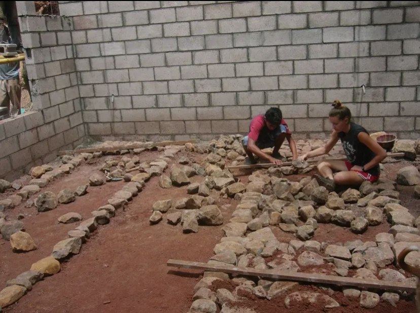
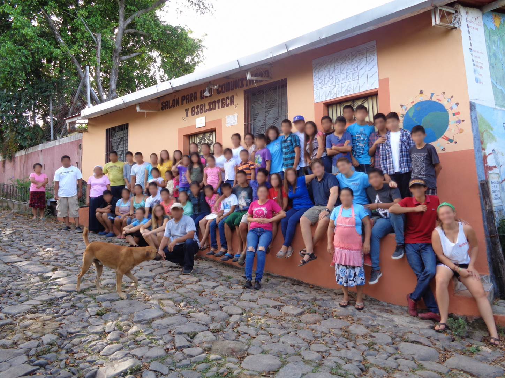
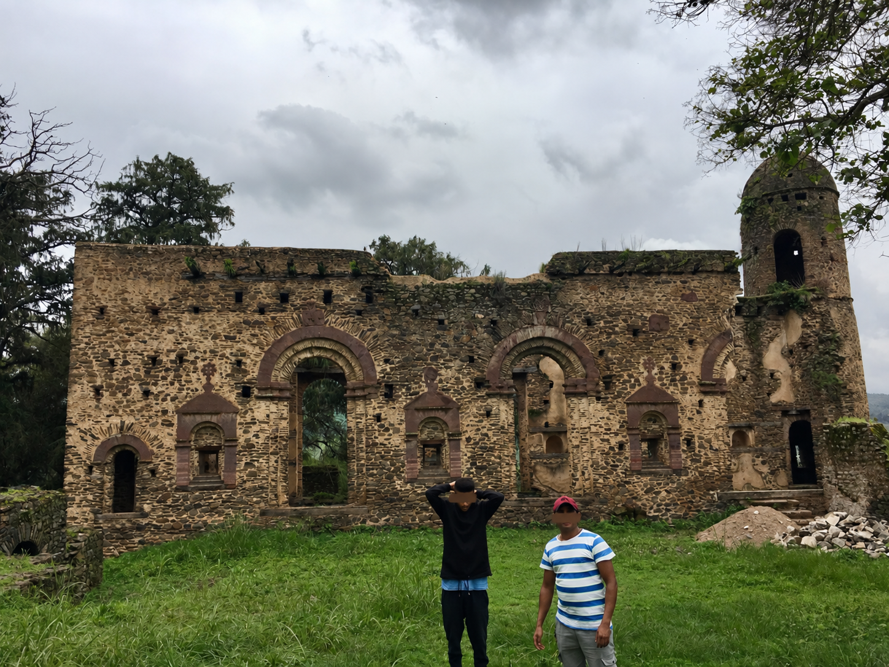
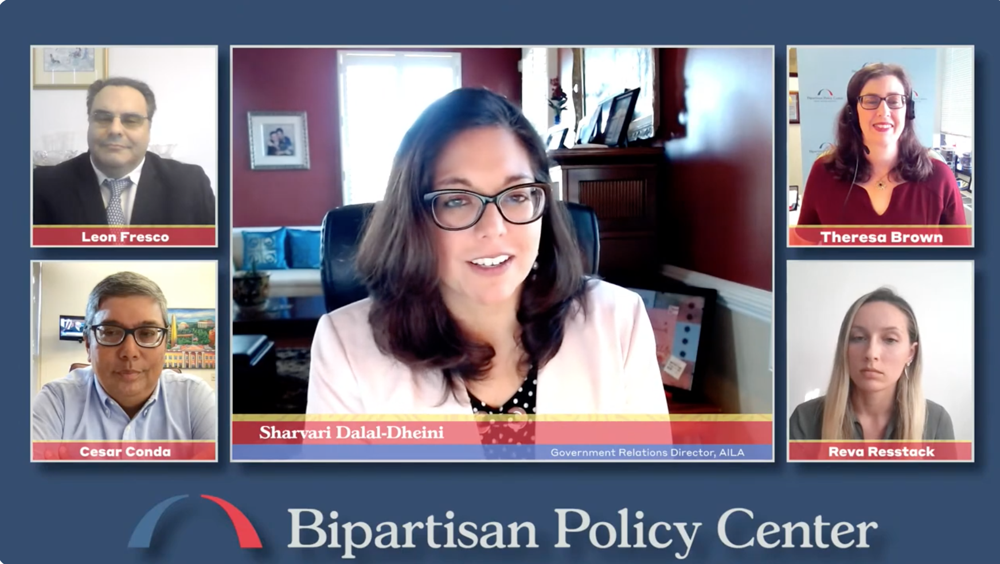
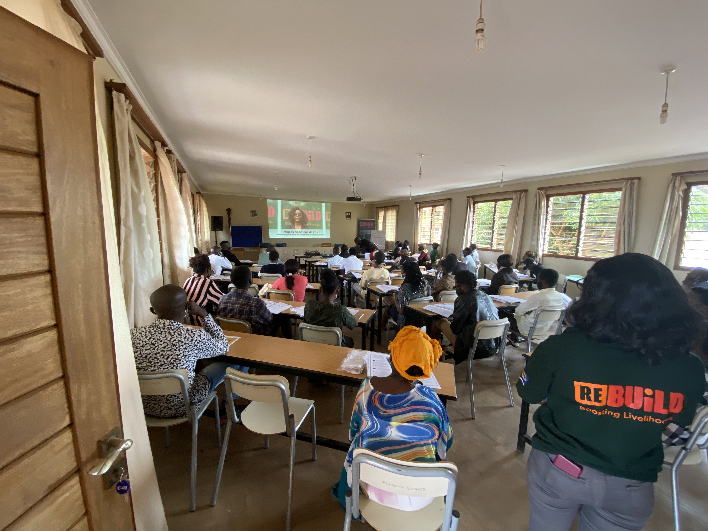
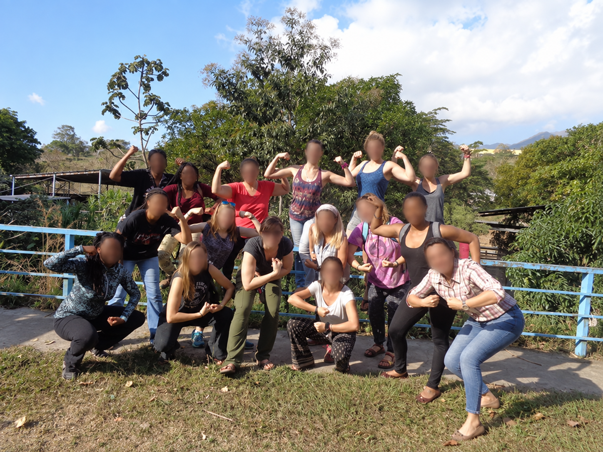
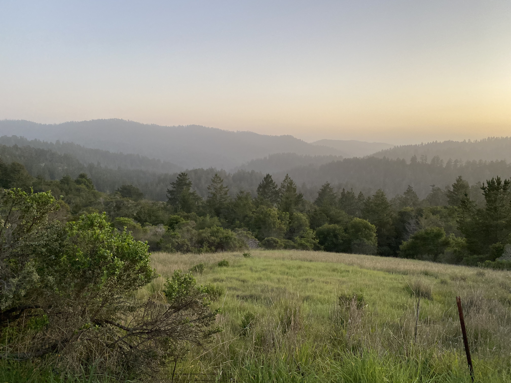

My Approach
My approach originates from the belief that economic frameworks should be used to study people, not the other way around. This perspective grew from a commitment to understanding how economic forces operate at the grassroots level.
I now draw on heterodox economic theory and practically relevant empirical methods to understand how institutions, markets, and shocks translate into meaningful changes in people’s economic opportunities. Most importantly, my approach is highly informed by relationships with people who continue to live in poverty.
Grassroots education
I began volunteering with a grassroots NGO in El Salvador at age 14. I have continued volunteering with and leading U.S. delegations for the NGO since. This has deeply shaped my understanding of economic development as communal.


Beyond the Americas
At 21, I traveled to Ethiopia by myself to better understand the experiences of immigrant communities I encountered in Washington, D.C. The experience broadened my perspective on migration and international development organizations.

Policy and practice
I have been fortunate to work at think tanks such as the Center for Global Development and the Washington Office on Latin America in Washington, D.C. These experiences gave me the opportunity to work alongside people who are hardworking, funny, and curious about helping the world become a better place.

Scholarship in action
I've supported EdD students developing their dissertations in El Salvador, facilitated workshops for an RCT done in collaboration with the International Rescue Committee in Uganda, and conducted qualitative interviews with migrant service providers in Peru. It's only so often you get to ask someone who is a Congolese refugee what he would have done if he had been the U.S. President during 9/11.. and go back and forth on his answer together.


Economic development at home
My interest in economic development also includes communities in the United States. I'm interested in understanding economic opportunity from a grassroots perspective while considering the experiences of people working in construction in southern California, the restaurant industry in North Carolina, and the hospitality industry in Kansas.

Current and future work
These experiences have shaped my interests thus far as an economist. In future research, I intend to maintain a focus on people who are poor or economically vulnerable and how economic research and policy may be more responsive to them in particular.